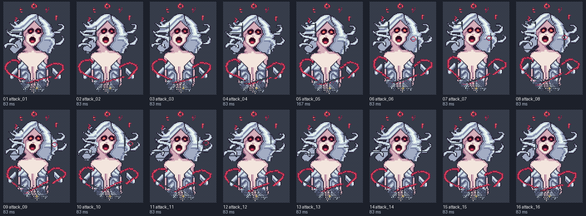
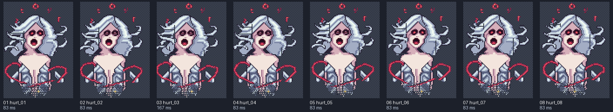
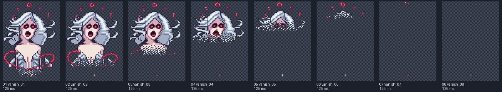

nyx-complete-battle
Local preview. Reload to replay a non-looping clip. Yellow crosses mark the shared pivot on contact sheets.
idle
8 FPS · loop: True

Frames and timing

- idle_01: 125.00 ms
- idle_02: 125.00 ms
- idle_03: 125.00 ms
- idle_04: 125.00 ms
- idle_05: 125.00 ms
- idle_06: 125.00 ms
- idle_07: 125.00 ms
- idle_08: 125.00 ms
- idle_09: 125.00 ms
- idle_10: 125.00 ms
- idle_11: 125.00 ms
- idle_12: 125.00 ms
- idle_13: 125.00 ms
- idle_14: 125.00 ms
- idle_15: 125.00 ms
- idle_16: 125.00 ms
attack
12 FPS · loop: False
Frames and timing

- attack_01: 83.33 ms
- attack_02: 83.33 ms
- attack_03: 83.33 ms
- attack_04: 83.33 ms
- attack_05: 166.67 ms
- attack_06: 83.33 ms
- attack_07: 83.33 ms
- attack_08: 83.33 ms
- attack_09: 83.33 ms
- attack_10: 83.33 ms
- attack_11: 83.33 ms
- attack_12: 83.33 ms
- attack_13: 83.33 ms
- attack_14: 83.33 ms
- attack_15: 83.33 ms
- attack_16: 83.33 ms
hurt
12 FPS · loop: False

Frames and timing

- hurt_01: 83.33 ms
- hurt_02: 83.33 ms
- hurt_03: 166.67 ms
- hurt_04: 83.33 ms
- hurt_05: 83.33 ms
- hurt_06: 83.33 ms
- hurt_07: 83.33 ms
- hurt_08: 83.33 ms
vanish
8 FPS · loop: False

Frames and timing

- vanish_01: 125.00 ms
- vanish_02: 125.00 ms
- vanish_03: 125.00 ms
- vanish_04: 125.00 ms
- vanish_05: 125.00 ms
- vanish_06: 125.00 ms
- vanish_07: 125.00 ms
- vanish_08: 125.00 ms
death
12 FPS · loop: False
Frames and timing

- death_01: 166.67 ms
- death_02: 83.33 ms
- death_03: 83.33 ms
- death_04: 83.33 ms
- death_05: 166.67 ms
- death_06: 83.33 ms
- death_07: 83.33 ms
- death_08: 83.33 ms
- death_09: 166.67 ms
- death_10: 83.33 ms
- death_11: 83.33 ms
- death_12: 83.33 ms
- death_13: 83.33 ms
- death_14: 83.33 ms
- death_15: 83.33 ms
- death_16: 83.33 ms
- death_17: 83.33 ms
- death_18: 83.33 ms
- death_19: 166.67 ms
- death_20: 83.33 ms
- death_21: 83.33 ms
- death_22: 83.33 ms
- death_23: 83.33 ms
- death_24: 83.33 ms
- death_25: 83.33 ms
- death_26: 83.33 ms
- death_27: 83.33 ms
- death_28: 333.33 ms